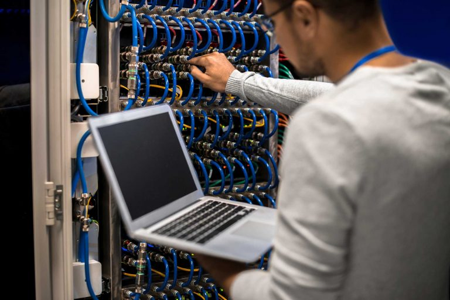
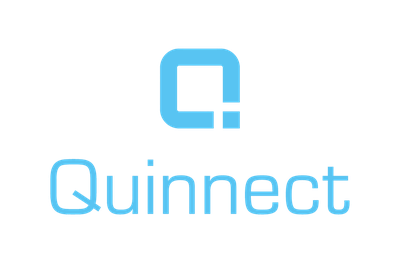
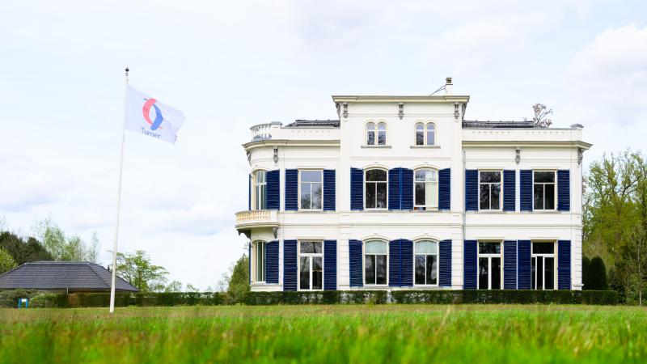
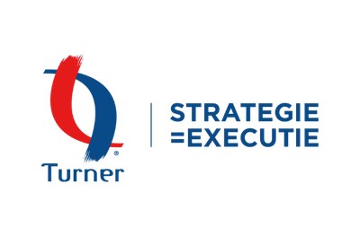
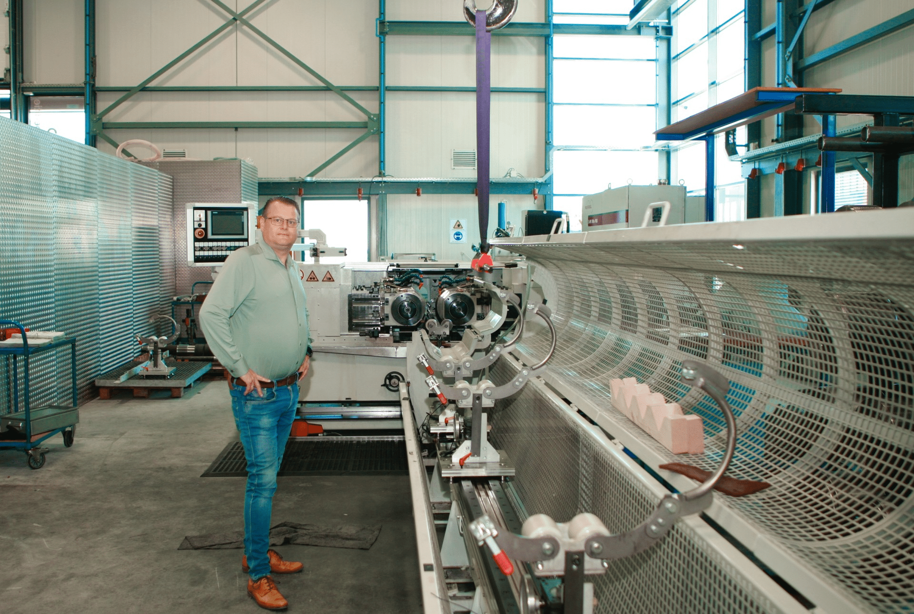
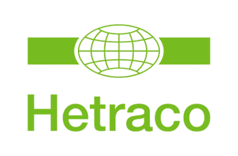
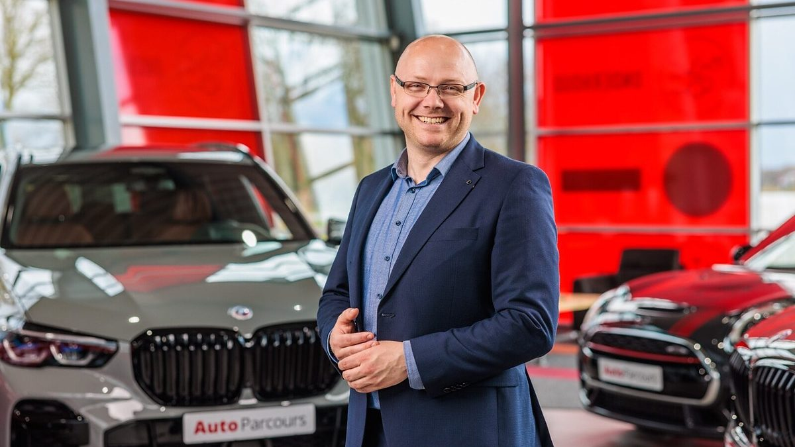
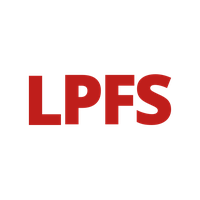

Wij investeren in kansrijke mkb-ondernemingen met bewezen businessmodel en groeiambitie
NLI Capital investeert in Nederlandse mkb-ondernemingen. Wij zoeken naar bedrijven met een bewezen businessmodel, sterke marktpositie en ambitieus management dat bereid is de volgende stap te zetten.


Nederlandse ICT-dienstverlener gespecialiseerd in connectiviteit en telecom voor woonzorginstellingen en het mkb. Gevestigd in Nijverdal, opgericht in 2011.


Strategieconsultant gespecialiseerd in strategie-executie voor de private en (semi-)publieke sector. Opgericht in 1993, gevestigd in Leusden.


Producent van special fasteners (bouten, moeren, tapeinden) voor de industrie. Opgericht in 1972, ca. 40 medewerkers, gevestigd in Apeldoorn.


Lease Parcours biedt lease-oplossingen voor zakelijke en privé-rijders, met een focus op zelfstandige ondernemers. Het bedrijf groeit via een breed intermediair netwerk.
Wij zijn voortdurend op zoek naar nieuwe participaties. Kom in gesprek met ons team.
Neem contact op